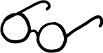

Köklü bir yanılgı var okurlar arasında. Yazmayı ifşa etmekle bir tutuyor kimileri, doğrusu niceleri. Hani yazar illaki kendini yazmak durumunda. Sanki dile getirilen her cümle, kâğıt üzerine düşmeyegörsün ıcığına cıcığına her yorum, anlatılan her karakter yazarın kimliğinde saklı hakikatleri ışığa çıkarmakla yükümlü. XVII. yüzyılda Sibirya'da geçmiş bir hikâye dahi alsanız kaleme, olsun, okur orada illaki yazarın hakikatini, kimliğini, kişiliğini arıyor. Arayan bulurmuş malum. Bulduğunu sabitliyor, donduruyor, çerçeveletiyor okur. Siz kimi, neyi, nasıl anlatırsanız anlatın o gene de bildiğini okuyor, siz neden bahsederseniz bahsedin o sadece görmek istediğini görüyor. Dönüp dolaşıp yazıyı illaki yazana mal ediyor okur, bir sureti kurutuyor sayfalar arasında. Oysa sanılanın aksine yazmak dediğin olsa olsa inşa işidir, ifşa işi değil. Yazıyı ifşa etmekle bir tutar nice okur. Ne kadar çok okursa bir yazarın kaleminden, onu o kadar iyi tanıdığına kani olur. Şahsen. Hani nerdeyse yediğimiz içtiğimiz ayrı gitmeyecek. Geçenlerde bir mektup, Denizli'den bir bayan okur. "Gerçi siz batıl inançlara inanırsınız ama ben pek inanmamaya çalışıyorum..." diye başlamış söze. Aldı beni bir düşünce, ta ki bulana kadar sebebini. İki gözüm okur, o okuduğun bir romanımdaki bir karakter. Batıl inançlarla hop oturup hop kalkan bir roman karakteri, ben değilim. Yazan ile yazılan arasındaki hudut boyu bir de bakmışsın ki silinivermiş böylesi gözlüklerden bakınca. İç içe geçmiş sular. Okuduklarını yazana atfedivermiş okur. Kendine hayali, mevcut olmayan bir yazar yaratıvermiş. Bir gölge oyunudur edebiyat, iç içe geçmiş kürevi aynalar dehlizinde. Yazıyı olduğundan küçük, yazarı olduğundan büyük gösteren çarpık aynalar...
"Sanatçı yokmuş gibi var olmalıdır" demişti Flaubert. "Bilhassa romancı." Keza kendisine niçin şiir yazmadığı sorulduğunda aynı doğrultuda cevap vermişti Capek: "Kendimden bahsetmeyi günahım kadar sevmediğim için şiir yazmayı seçmedim ömrü hayatımda". Kimse benden "gerçek" hayatıma dair tek kelime beklemesin, diye defaatle uyarmıştı Italo Calvino. Ve Nabokov her konuda yazabilirdi yazmasına da, biyografisini ifşa peşinde koşanlarla muhatap olmak en son istediği şeydi hayatta. Keza Faulkner kendine dair iz bırakmadan gitmek istediğini defalarca dile getirmişti. Gogol ömrünün sonlarına doğru fanatik bir rahibin de etkisi altında din ve dünyevilik arasında zikzaklar çizerken en önemli yapıtlarından Ölü Canlar'ı yakmaya kalkmış, ardından aynı işlemi kendine uygulamıştı. İzim kalmasın... Yazılan her yazı bir öncekini silmeye yönelik olabilir pekâlâ. Sanılanın aksine "ifşa"dan ziyade "esrar"a meyyal olur anlatıcı.
Dedim ya bir gölge oyunudur edebiyat, iç içe geçmiş kürevi aynalar dehlizinde. Sadece okurun değil yazarın da nezdinde. Yazıyı olduğundan küçük, yazarı olduğundan büyük gösteren sihirli ama çarpık aynalar... Tüm edebi türler içinde en çok roman, en çok da o yarar inşaya, hem kurgu inşasına hem ego inşasına. Dantel dantel göz nuru egolar örer roman, romancısına. Kâğıt üstünde karakterler yarattın kurgular batırdın ya hükümran zannedersin kendini, hiç olmazsa bir zaman.
Kurduğunu yıkmaktır edebiyat, hakikati parçalamak, her parçadan ayrı ayrı bakmak, mıhlanmamak bir köşeye ya da bir kimliğe, değişebilmek, dönüşebilmek, HİÇ olabilmek, ÇOK ve ÇOĞUL olabilmek, başkası olabilmektir. Bu bir yanılsamalar dehlizi. Doğrudur, inansam da batıl inançlara, benzeşse de huylarımız kimi zaman şu ya da bu roman karakterinkiyle, son tahlilde gördüğün suret ben değilim ey okur. Suret tekildir, kitap ise çoğul. Suret sabittir, kitap ise değişken. Suret ses vermez sesine, kitap ise söyleşir seninle. Aslolan kitaptır, metnin kendisidir, yazarın da okurun da esas muhatabı anlatılan hikâyedir, gerisi beyhude...
Michigan